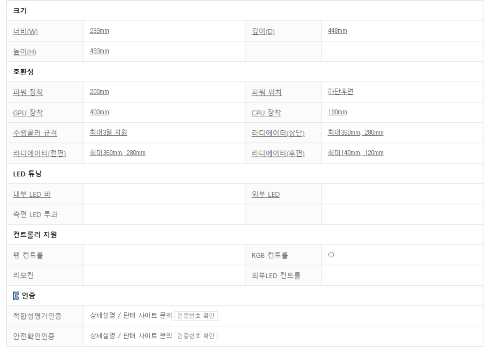

출처 : 다나와 닷컴 DLX21 제품 상세설명
다른 컴퓨터 부품 항목과는 다르게 케이스는 별도의 강조를 하지 않았습니다. 이는 이유가 있는데, 케이스는 왠만하면 거의 다 보아야 합니다. 그러면 맨 위부터 차근차근 훑으면서 내려가보겠습니다.
케이스 크기 : 일반적으로 미니타워, 미들타워, 빅타워 3종류를 사용하며 케이스의 크기를 가장 직관적으로 나타내는 지표입니다. 주로 호환되는 메인보드의 크기에 영향을 받습니다.
m-ATX보드는 미니타워, 미들타워, 빅타워에서 사용이 가능하고 ATX메인보드는 미들타워 ,빅타워에서 사용이 가능하며 E-ATX보드는 일부 미들타워, 빅타워에서 사용이 가능합니다.
지원파워규격 : 장착할 수 있는 파워의 규격을 나타냅니다. 일반적으로 ATX파워를 사용합니다.
지원보드규격 : 여기서 본인이 사용할 보드의 크기가 호환되는지에 대한 여부를 확인하면 됩니다.
내부 확장 : 8.9cm(3.5인치)베이는 하드디스크를 장착할 수 있는 공간입니다. 6.4cm(2.5인치)베이는 SATA3방식의 SSD를 장착 할 수 있는 공간입니다. PCI슬롯은 일반적으로 그래픽카드를 장착할 때 사용합니다. 최신 그래픽카드는 2개의 슬롯을 사용합니다.
수직 PCI슬롯은 라이저카드 등을 이용하여 그래픽카드를 세로로 꽂았을 때에 그래픽카드 포트가 원만하게 노출되는 슬롯을 의미합니다.
쿨링팬 : 기본으로 제공되는 케이스에 장착된 쿨러를 의미합니다.
측면 : 케이스의 측면이 철판인지 아크릴인지 강화유리인지를 의미합니다. 각각의 장단점이 있습니다. 아크릴같은 경우에는 가볍지만 스크래치가 잘 나는 단점이 있습니다. 강화유리는 빛 투과성이 높고 스크래치에 강하지만 무겁고 부서질수 있다는 단점이 있습니다.
LED팬 : 기본 제공되는 쿨링팬 중에 몇개가 팬에 LED가 탑재된 것인지를 의미합니다.
후면, 전면, 상단, 하단, 내부상단, 내부측면 : 기본 탑재된 케이스 쿨링 팬이 어느 곳에 몇개 장착되어있는지를 의미합니다.
외부 포트 : 케이스 자체에 달려있어 메인보드에 연결하여 사용 할 수 있는 포트를 의미합니다. 케이스에 포트가 존재하지 않더라도 메인보드에 직접 케이블을 연결하여 사용할 수 있습니다.
크기 : 케이스 전체의 크기를 의미합니다.
파워 장착 : 파워 서플라이에서 '깊이'를 의미합니다.
GPU 장착 : 케이스에 그래픽카드가 장착될 수 있는 공간을 의미합니다. 일부 케이스는 전면의 팬을 해체하면 장착할 수 있는 공간이 늘어나기도 합니다.
CPU 장착 : 쿨러의 '높이'를 의미합니다. 단, 5mm 이상의 차이가 있어야 성능상의 불이익을 받지 않습니다.
수냉쿨러 규격 : 몇 열의 수냉쿨러가 장착이 가능한지에 대한 여부입니다.
라디에이터(상단,전면,후면) : 수냉쿨러 규격의 연장선입니다. 케이스 상단에 몇 mm 의 라디에이터가 장착 가능한지에 대한 지표입니다.
LED튜닝 : 케이스에 기본적으로 적용되어있는 LED튜닝을 의미합니다.
컨트롤러 지원 : 팬, RGB 컨트롤은 케이스에서 메인보드에서 모자란 PWM팬 컨트롤 포트나 RGB전용 팬 포트를 제공해주는지에 대한 여부입니다.